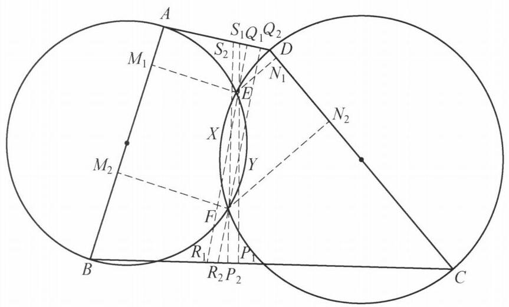

95 例 10：反演圆与正交圆幂性质
95.1 题目
凸四边形 {ABCD} 中, {AD} 不平行于 {BC} . 分别以 {AB},{CD} 为直径作圆, 设两圆交于 E, F 两点,且 E, F 均在四边形 {ABCD} 形内. {\omega }_E 是点 E 在 {AB},{BC} , {CD} 上的投影的外接圆, {\omega }_F 是点 F 在 {CD},{DA},{AB} 上的投影的外接圆. 证明: {\omega }_E 与 {\omega }_F 的根轴平分线段 {EF} .

图 6-11
95.2 参考解答
如图 6-11,设点 E 在 {AB},{CD},{BC},{AD} 上的投影分别为 {M}_1,{N}_1 , {P}_1,{Q}_1 . 点 F 在 {AB},{CD},{BC},{AD} 上的投影分别为 {M}_2,{N}_2,{P}_2,{Q}_2 .
记 {S}_1 = E{P}_1 \cap {AD},{S}_2 = F{P}_2 \cap {AD},{R}_1 = E{Q}_1 \cap {BC},{R}_2 = F{Q}_2 \cap {BC}, X = \; E{Q}_1 \cap F{P}_2, Y = E{P}_1 \cap F{Q}_2 .
因为
\angle {Q}_1{M}_1{P}_1 = \angle {Q}_1{M}_{1}E + \angle {P}_1{M}_{1}E
= \angle {EAD} + \angle {EBC}
= \angle {DAB} + \angle {ABC} - \left( {{180}^{ \circ } - \angle {AEB}}\right)
= \angle {Q}_1{S}_{1}E + \angle E{P}_{1}C - {90}^{ \circ }
= \angle {Q}_1{S}_{1}E
= \angle {P}_{1}{R}_{1}E\text{ . }
所以, {P}_1,{Q}_1,{M}_1,{R}_1,{S}_1 共圆,类似地 {N}_1 也在该圆上,即 {M}_1,{N}_1,{P}_1,{Q}_1 , {R}_1,{S}_1 均在 {\omega }_E 上.
同理, {M}_2,{N}_2,{P}_2,{Q}_2,{R}_2,{S}_2 均在 {\omega }_F 上.
而 \angle {P}_1 = \angle {P}_2 = \angle {Q}_1 = \angle {Q}_2 = {90}^{ \circ } ,则 {Q}_{1}X \cdot X{R}_1 = {P}_{2}X \cdot X{S}_2 ,所以, X 在 {\omega }_E 与 {\omega }_F 的根轴上.
同理, Y 也在 {\omega }_E 与 {\omega }_F 的根轴上.
故 {XY} 是 {\omega }_E 与 {\omega }_F 的根轴.
因为 {P}_1{S}_1//{P}_2{S}_2,{Q}_1{R}_1//{Q}_2{R}_2 ,所以 {EXFY} 是平行四边形,于是 {XY} 平分线段 {EF} ,即 {\omega }_E 与 {\omega }_F 的根轴平分线段 {EF} . 原问题得证.
注: 该问题的一个自然的想法是找出更多的圆 {\omega }_E 和圆 {\omega }_F 上的点,然后去刻画它们的根轴.
95.3 解题思路与分析
这个证明之所以让人觉得“像变魔术一样费解”，是因为教材采用了竞赛解答中典型的“综合法（由因导果）”倒序书写：它把最核心的几何直觉（平行四边形对角线互相平分）藏在了最后一行，却把为了配合这个直觉而构造的一堆辅助点（R_i, S_i, X, Y）毫无征兆地塞进了第一句话。
如果把它的书写顺序倒过来，按照人类真实的破题思维——“分析法（执果索因 / 逆向推导）”来还原，你会发现每一步的构造不仅不突兀，反而是顺理成章、甚至是唯一自然的。
下面我们分四步完整还原这个证明的逆向诞生过程：
95.3.1 第一步：识破题面的“不对称障眼法”（补全四个垂足）
观察题目条件： * 点 E 和点 F 的地位是完全对称的（都是两个直径圆的交点）； * \omega_E 的定义只用了点 E 在 AB, BC, CD 三条边上的投影（唯独漏了 AD），而 \omega_F 只用了点 F 在 CD, DA, AB 三条边上的投影（唯独漏了 BC）。
在几何竞赛中，“条件高度对称，但定义故意不对称”往往是命题人设置的障眼法。面对这种不对称，最本能的第一反应就是：点 E 在第四条边 AD 上的投影 Q_1 其实也在 \omega_E 上；点 F 在第四条边 BC 上的投影 P_2 其实也在 \omega_F 上。
一旦把 Q_1 和 P_2 补齐，\omega_E 和 \omega_F 就分别是点 E, F 关于四边形 ABCD 的“垂足圆”。
95.3.2 第二步：从结论倒推——如何不靠计算证明“平分线段 EF”？
我们要证“根轴平分线段 EF”。在纯几何中，如果不使用解析计算或中点公式，证明一条直线 l 平分线段 EF 最经典、最优雅的套路是什么？
答案是：以 EF 为一条对角线构造平行四边形 EXFY，然后证明另一条对角线上的两个端点 X, Y 都在根轴 l 上！只要 X, Y 在根轴上，直线 XY 就是根轴，而平行四边形的对角线互相平分，结论瞬间得证。
那么，利用图中现有的线，怎么过 E, F 构造出天然的平行四边形？ 1. 题目为了定义 \omega_E 和 \omega_F，已经从 E, F 向四条边作了垂线。 2. 注意到垂直于同一条直线的两条垂线天然平行！ 3. 四条边中，AB, CD 是用来作直径圆的，剩下的两条对边恰好是 AD 和 BC（注意题目专门强调了一句“AD 不平行于 BC”——为什么要给这个条件？就是为了保证 AD 的垂线与 BC 的垂线一定相交！）。 4. 于是我们直接取这两对垂线： * 过 E, F 作 AD 的垂线：EQ_1 \parallel FQ_2（均垂直于 AD）； * 过 E, F 作 BC 的垂线：EP_1 \parallel FP_2（均垂直于 BC）。
把这两组平行线一交，设 X = EQ_1 \cap FP_2，Y = EP_1 \cap FQ_2，四边形 EXFY 天然就是一个平行四边形！这就是辅助点 X, Y 诞生的真正原因。
95.3.3 第三步：如何证明 X 在根轴上？（割线定理与 R_1, S_2 的诞生）
有了平行四边形 EXFY，问题彻底转化为：证明点 X（以及同理的点 Y）在 \omega_E 与 \omega_F 的根轴上，即证点 X 对两圆的圆幂相等： \text{Pow}(X, \omega_E) = \text{Pow}(X, \omega_F)
怎么用几何方法表示点 X 对两圆的圆幂？看一看经过点 X 的两条现成直线： * 直线 EQ_1 经过点 X，且它上面的点 Q_1 已经在圆 \omega_E 上了； * 直线 FP_2 经过点 X，且它上面的点 P_2 已经在圆 \omega_F 上了。
要想写出圆幂，我们自然希望找到直线 EQ_1 与 \omega_E 的第二个交点 R_1，以及直线 FP_2 与 \omega_F 的第二个交点 S_2。如果能找到它们，那么圆幂相等就等价于： Q_1 X \cdot X R_1 = P_2 X \cdot X S_2
由相交弦/割线定理逆定理，上式成立当且仅当 Q_1, R_1, P_2, S_2 四点共圆！
这时候，最精彩的一步来了——R_1 和 S_2 在哪里时，Q_1, R_1, P_2, S_2 会自动四点共圆？ * 我们已知 X R_1 \perp AD 于点 Q_1。如果点 S_2 恰好落在直线 AD 上，那么 \angle S_2 Q_1 R_1 就是天然的 90^\circ！ * 我们已知 X S_2 \perp BC 于点 P_2。如果点 R_1 恰好落在直线 BC 上，那么 \angle S_2 P_2 R_1 也是天然的 90^\circ！
一旦 \angle S_2 Q_1 R_1 = \angle S_2 P_2 R_1 = 90^\circ，那么 Q_1, P_2, R_1, S_2 四个点就自动落在以 R_1 S_2 为直径的圆上，从而 Q_1 X \cdot X R_1 = P_2 X \cdot X S_2 恒成立！
这给了我们一个极其强烈的暗示：去验证直线 EQ_1 与 BC 的交点 R_1 是否真的在 \omega_E 上，以及直线 FP_2 与 AD 的交点 S_2 是否真的在 \omega_F 上！
95.3.4 第四步：揭开六点共圆的真相——\omega_E 的真实身份
现在只剩最后一个问题：为什么 R_1 = EQ_1 \cap BC 和 S_1 = EP_1 \cap AD 真的会落在圆 \omega_E 上？
书上的证明把“P_1, Q_1, M_1, R_1, S_1 共圆”混在一起证，容易让人误以为 R_1, S_1 是附带证出来的。但事实恰恰相反：
对于平面上任意一点 E，P_1, Q_1, R_1, S_1 四点永远自动共圆！ 为什么？因为 Q_1, S_1 在直线 AD 上，而 R_1 Q_1 \perp AD，所以 \angle S_1 Q_1 R_1 = 90^\circ；同理，P_1, R_1 在直线 BC 上，而 S_1 P_1 \perp BC，所以 \angle S_1 P_1 R_1 = 90^\circ。 （如果设 T = AD \cap BC，那么 E 其实就是 \triangle T R_1 S_1 的垂心，P_1, Q_1 是两条高线的垂足。） 因此，无论点 E 在哪里，P_1, Q_1, R_1, S_1 都必然共圆，且这个圆就是以 R_1 S_1 为直径的圆！
圆 \omega_E 的真实身份，就是以 R_1 S_1 为直径的圆！ 既然 P_1, Q_1, R_1, S_1 已经确定了一个以 R_1 S_1 为直径的圆，那么要想证明 M_1, N_1, P_1, Q_1, R_1, S_1 六点共圆，我们根本不需要去找什么复杂的圆，只需要证明：当 \angle AEB = 90^\circ 时，垂足 M_1 也落在这个以 R_1 S_1 为直径的圆上（同理当 \angle CED = 90^\circ 时，N_1 也落在该圆上）。
倒角是怎么算出来的？ 要证 M_1 落在圆 (P_1 Q_1 R_1 S_1) 上，只需证圆周角相等： \angle Q_1 M_1 P_1 = \angle Q_1 S_1 P_1 \quad (\text{即 } \angle Q_1 S_1 E) 书上的那串倒角就是围绕这个目标展开的常规操作：
- 拆角：把 \angle Q_1 M_1 P_1 拆成 \angle Q_1 M_1 E + \angle P_1 M_1 E。
- 利用垂足四点共圆转角：
- 因为 \angle A Q_1 E = \angle A M_1 E = 90^\circ，所以 A, Q_1, E, M_1 四点共圆（以 AE 为直径），得 \angle Q_1 M_1 E = \angle EAD；
- 因为 \angle B P_1 E = \angle B M_1 E = 90^\circ，所以 B, P_1, E, M_1 四点共圆（以 BE 为直径），得 \angle P_1 M_1 E = \angle EBC。
- 代入唯一的核心条件 \angle AEB = 90^\circ： 在 \triangle AEB 中，\angle EAB + \angle EBA = 180^\circ - \angle AEB = 90^\circ，因此： \angle EAD + \angle EBC = \angle DAB + \angle ABC - (\angle EAB + \angle EBA) = \angle DAB + \angle ABC - 90^\circ
- 回到五边形 A B P_1 E S_1（或四边形内角和）： 在四边形 A B P_1 S_1 中，利用 \angle B P_1 S_1 = 90^\circ，很容易把 \angle DAB + \angle ABC - 90^\circ 化简为 \angle Q_1 S_1 E。
95.3.5 思维脉络复盘
把整个探索过程串联起来，作者脑海中的真实路径是这样的：
\begin{aligned} \text{欲证根轴平分 } EF &\xrightarrow{\text{几何模型}} \text{以 } EF \text{ 为对角线构造平行四边形 } EXFY \text{，转证 } X, Y \text{ 在根轴上} \\ &\xrightarrow{\text{寻找平行线}} \text{利用 } E, F \text{ 到 } AD, BC \text{ 的垂线天然平行，交出 } X, Y \\ &\xrightarrow{\text{欲证圆幂相等}} \text{需要割线 } EQ_1, FP_2 \text{ 与两圆的第二交点 } R_1, S_2 \text{ 满足 } Q_1, R_1, P_2, S_2 \text{ 共圆} \\ &\xrightarrow{\text{利用垂直条件}} \text{发现只要 } R_1 \in BC, S_2 \in AD \text{，就有双直角自动共圆} \\ &\xrightarrow{\text{回归原圆验证}} \text{发现 } (P_1 Q_1 R_1 S_1) \text{ 本身就是以 } R_1 S_1 \text{ 为直径的圆，只需倒角验证 } M_1, N_1 \text{ 在其上！} \end{aligned}
你看，顺着这个方向想，每一步都是被目标“逼”出来的；而教材把最后一步放到了最前面写，才造就了那种“神来之笔”的错觉。对于这四个逆向步骤，你觉得哪一环的跨越最让你意外，或者想进一步探讨这题的其他证法（如代数计算或位似性质）吗？
95.4 分步证明
95.4.1 步骤 0：✦ 已知条件与几何构型
凸四边形 ABCD 中，AD 与 BC 不平行。 分别以边 AB, CD 为直径作圆 C₁, C₂，两圆交于四边形形内两点 E, F。 连接交点连线 EF。本题求证：点 E, F 的正交投影外接圆 ωE 与 ωF 的根轴平分线段 EF。
95.4.2 步骤 1：① 点 E 在四边上的正交投影
分别过点 E 作四边 AB, CD, BC, AD 的垂线，垂足分别为 M₁, N₁, P₁, Q₁。 因为点 E 在以 AB 为直径的圆上，故 ∠AEB = 90°；同理 ∠CED = 90°。 在四边形 AQ₁EM₁ 与 BP₁EM₁ 中，对角均为直角，天然存在共圆结构。
95.4.3 步骤 2：② 导角证明六点共圆于 ωE
延长 EP₁ 交 AD 于 S₁，延长 EQ₁ 交 BC 于 R₁。 由 A, Q₁, E, M₁ 与 B, P₁, E, M₁ 分别共圆，得： ∠Q₁M₁P₁ = ∠Q₁M₁E + ∠P₁M₁E = ∠EAD + ∠EBC = ∠DAB + ∠ABC - (180° - ∠AEB) = ∠Q₁S₁E = ∠P₁R₁E。 因此 P₁, Q₁, M₁, R₁, S₁ 五点共圆；同理 N₁ 亦在该圆上！ 即 M₁, N₁, P₁, Q₁, R₁, S₁ 六点共圆于 ωE。
95.4.4 步骤 3：③ 对称推导点 F 的六点共圆于 ωF
设点 F 在 AB, CD, BC, AD 上的投影分别为 M₂, N₂, P₂, Q₂。 延长 FP₂ 交 AD 于 S₂，延长 FQ₂ 交 BC 于 R₂。 完全同理可得：M₂, N₂, P₂, Q₂, R₂, S₂ 六点共圆于外接圆 ωF。
95.4.5 步骤 4：④ 割线交点 X 位于根轴上
记直线 EQ₁ 与 FP₂ 的交点为 X（即直线 Q₁R₁ 与 P₂S₂ 的交点）。 在直角三角形 △XQ₁S₂ 与 △XP₂R₁ 中，锐角均等于边夹角的余角，故两三角形相似： XQ₁ / XP₂ = XS₂ / XR₁ ⇒ Q₁X · XR₁ = P₂X · XS₂。 因为割线 Q₁R₁ 位于 ωE 上，割线 P₂S₂ 位于 ωF 上，故点 X 对两圆圆幂相等！ 因此，X 必在两圆的根轴上！
95.4.6 步骤 5：⑤ 对称交点 Y 确定直线 XY 为根轴
同理，记直线 EP₁ 与 FQ₂ 的交点为 Y（即直线 P₁S₁ 与 Q₂R₂ 的交点）。 对称地，由直角三角形相似知：YP₁ · YS₁ = YQ₂ · YR₂。 故点 Y 对圆 ωE 与 ωF 的圆幂亦相等，Y 亦在根轴上！ 两点确定一条直线，直线 XY 即为两圆 ωE 与 ωF 的根轴。
95.4.7 步骤 6：⑥ 平行四边形对角线平分 ⇒ 根轴平分 EF
考察四边形 EXFY 的对边： 因为 EQ₁ ⟂ AD 且 FQ₂ ⟂ AD，故 EQ₁ ∥ FQ₂，即 EX ∥ YF； 因为 EP₁ ⟂ BC 且 FP₂ ⟂ BC，故 EP₁ ∥ FP₂，即 EY ∥ XF。 两组对边分别平行，所以 四边形 EXFY 为严格的平行四边形！ 在平行四边形中，对角线互相平分，因此对角线 XY 必平分线段 EF。 结论：ωE 与 ωF 的根轴平分线段 EF。命题证毕！